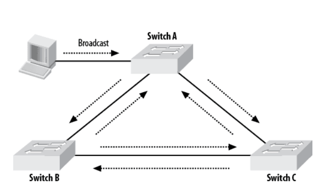
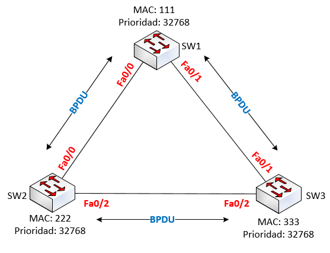
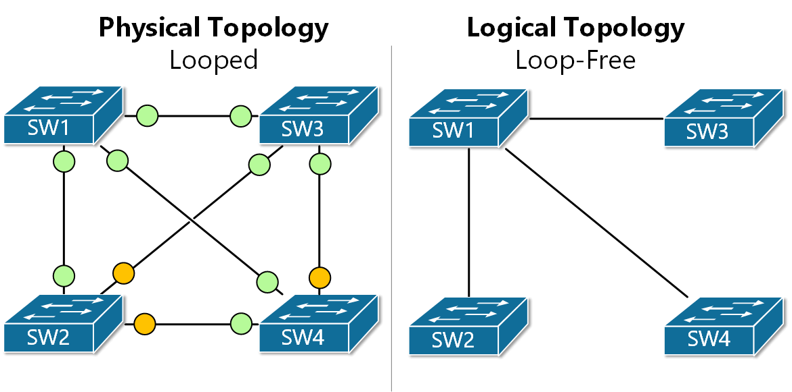
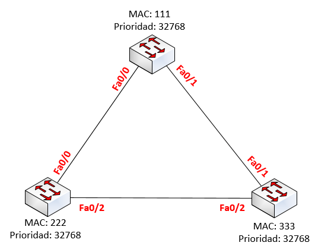
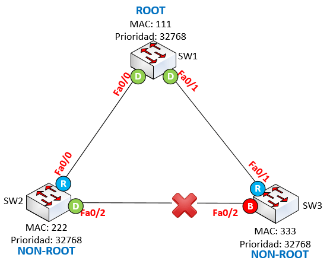
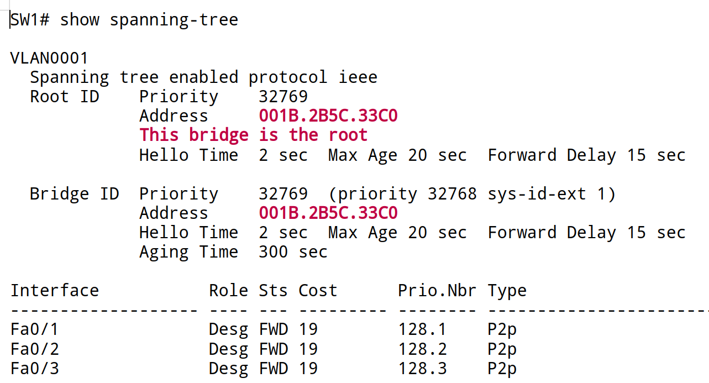
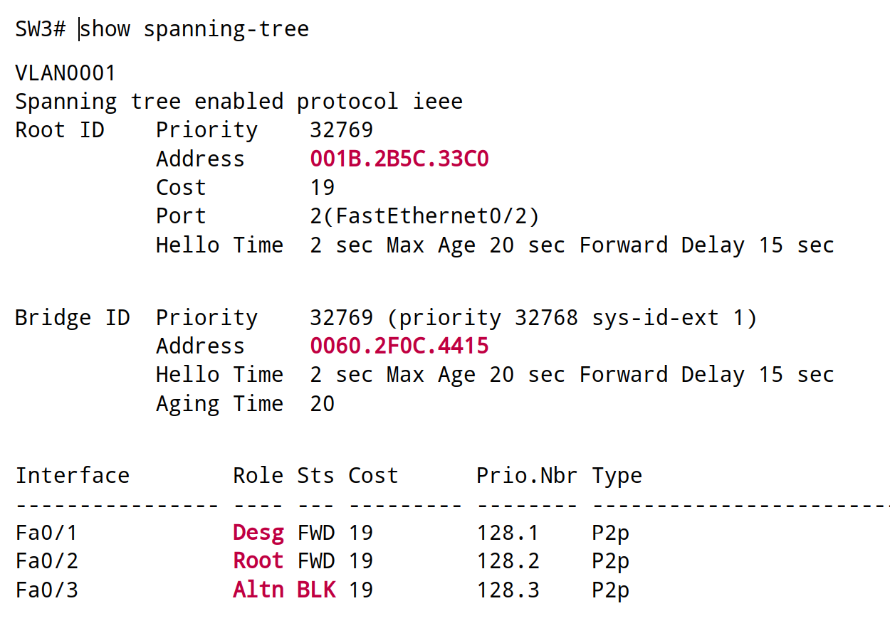

EL PROTOCOLO STP¶
1. Introducción¶
El Spanning Tree Protocol (STP) es un protocolo de nivel 2 definido por IEEE 802.1D.
Su función es permitir que una red Ethernet conmutada (con switches) que tiene enlaces redundantes, detecte la topología y bloquee dinámicamente ciertos puertos. Con esto consigue evitar bucles
En una red con enlaces redundantes hay múltiples caminos posibles y puden formarse bucles por los que las tramas Ethernet podrían circular infinitamente, causando congestión y dejando la red inoperativa.

STP analiza la topología de la red, identifica dichas rutas redundantes y bloquea temporalmente aquellos puertos que podrían generar un bucle, asegurando que exista siempre un único camino activo entre cada par de switches.
Si un enlace principal falla, STP puede reactivar automáticamente un puerto bloqueado, garantizando que la red siga funcionando sin interrupciones.
2. Funcionamiento de STP¶
Cómo acabamos de explicar, STP funciona analizando la topología de la red y decidiendo qué puertos deben estar activos y cuáles deben quedar bloqueados para evitar bucles.
Para ello, Los switches que tienen STP activado intercambian mensajes BPDU (Bridge Protocol Data Units).
Las BPDU son tramas especiales de capa 2 que utilizan los switches para comunicarse entre sí y mantener funcionando el Spanning Tree Protocol (STP).
2.1 Resultado de la ejecución de STP. Convergencia¶
La convergencia STP es el proceso mediante el cual los switches intercambian BPDUs (no vamos a entrar en los detalles de los mensajes intercambiados)

El resultado final siempre presenta una estructura estable basada en estos elementos clave:
Hay un único switch raíz (Root Bridge)
STP elige un switch como referencia central. Será aquel cuyo valor de prioridad sea el menor. Todos los demás switches calculan sus caminos hacia él.
Hay un rol definido para cada puerto del switch.
Tras calcular la topología, cada puerto adopta uno de estos roles:
- Root Port (RP): es el puerto del switch que ofrece el mejor camino hacia el Root Bridge.
- Designated Port (DP): es el puerto encargado de reenviar tráfico hacia un segmento de red.
- Alternate/Backup Port: son puertos que quedan como respaldo porque podrían causar un bucle. Permanecen en estado Blocking hasta que sean necesarios.
Hay un estado final asignado a cada puerto. Dependiendo del rol, los puertos terminan en:
- Forwarding: si el puerto participa activamente en el envío y recepción de tráfico.
- Blocking: si el puerto es redundante y debe mantenerse inactivo para evitar bucles. No reenvía tráfico; solo escucha.
!!! Nota Un puerto en estado Blocking no reenvía tráfico de datos ni aprende MAC, pero siempre escucha y procesa BPDUs. Esa es la única forma de que STP pueda detectar fallos y reconvergir la topología
Una topología en forma de árbol
STP elimina cualquier bucle creando una estructura jerárquica en la que cada switch tiene un camino único hacia el Root Bridge.

Red estable
Cuando la red ya está totalmente estable (todos los puertos en Forwarding/Blocking y la convergencia terminó) el Root Bridge sigue enviando BPDUs cada 2 segundos (Hello Timer) porque es la única forma de que el resto de switches sepan que el Root Bridge sigue vivo. Si el Root deja de enviar BPDUs, todos los switches asumen que ha fallado y empiezan una nueva elección del Root
2.2 Prioridad de cada switch y elección del Root Bridge¶
STP sigue un orden estricto para elegir al root.
Regla 1¶
El switch con la MENOR prioridad STP es el Root Bridge.
Ejemplo:
- SW1 → prioridad 4096
- SW2 → prioridad 32768
- SW3 → prioridad 12288
El root será SW1 (4096) → menor prioridad
Si hay empate se aplica la
Regla 2¶
Si dos o más switches tienen exactamente la misma prioridad, se confierte en Root el switch que tenga la menor MAC address.
Ejemplo:
- SW1 → prioridad 32768, MAC 00:10:FF:AA:00:01
- SW2 → prioridad 32768, MAC 00:0A:BB:20:00:02
- SW3 → prioridad 32768, MAC 00:50:CC:30:00:03
Root = S2, porque tiene la MAC más baja.
Ese conjunto (prioridad + MAC) se llama Bridge ID del switch.
Prioridad por defecto y prioridad real.¶
En switches Cisco (y en la mayoría de fabricantes), la prioridad por defecto es: 32768
Además, Cisco le añade el Extended System ID, que es el número de VLAN, así:
Prioridad real = 32768 + VLAN_ID
Ejemplo
- Para VLAN 1 → prioridad = 32768 + 1 = 32769
- Para VLAN 10 → prioridad = 32768 + 10 = 32778
2.3 Ejemplo práctico¶
Imagina tres switches SW1, SW2 y SW3 conectados formando un triángulo (cada uno conectado a los otros dos):

Si los switches no tienen activado y configurado STP forman un bucle que hace que la red se vuelve muy lenta o totalmente inutilizable.
Cuando termina de ejecutarse STP acabamos con una configuración similar a la siguiente:

SW1 se convierte en switch raíz (Root Bridge). Los puertos del root bridge son siempre puertos designados y siempre están en estado de forwarding o reenvío
| Puerto | Rol | Estado |
|---|---|---|
| Hacia SW2 | Designated Port | Forwarding |
| Hacia SW3 | Designated Port | Forwarding |
SW2
| Puerto | Rol | Estado |
|---|---|---|
| Hacia SW1 | Root Port | Forwarding |
| Hacia SW3 | Designated Port | Forwarding |
SW3
| Puerto | Rol | Estado |
|---|---|---|
| Hacia SW1 | Root Port | Forwarding |
| Hacia SW3 | Alternate Port | Blocked |
Al final solo hay un único camino activo entre cada par de switches. La topología lógica de los switches es en arbol
3. Estados de los puertos en STP¶
Aparte de los estados finales de STP existen otros estados en los que puede estar un puerto:
| Estado | Qué hace el puerto | Explicación fácil |
|---|---|---|
| Blocking | No reenvía tráfico; solo escucha. | "Semáforo en rojo" para evitar bucles. |
| Listening | Analiza si debe usarse. | El switch "piensa" qué hacer. |
| Learning | Aprende direcciones MAC. | "Preparándose para abrir el paso". |
| Forwarding | Reenvía y recibe tráfico. | "Semáforo en verde": funcionando. |
| Disabled | No participa en STP. | Apagado o deshabilitado. |
Los puertos pasan por etapas de seguridad antes de activarse: primero bloquean, después escuchan, luego aprenden y finalmente permiten/bloquean tráfico.
4. Comportamiento ante fallos¶
4.1 Situación inicial¶
La red tiene enlaces redundantes y STP bloquea uno de ellos para evitar bucles.
+-----------+
| SW1 | ← Root Bridge
+-----------+
|D(FWD) \D(FWD)
| \
| |
|R(FWD) \R(FWD)
+-----------+ +-----------+
| SW2 | | SW3 |
+-----------+ +-----------+
|D(FWD) |A(BLOCKED)
| |
+---------------+
4.2 Falla de un enlace¶
Si se rompe el enlace entre SW1 y SW2, STP detecta la pérdida de BPDUs y recalcula.
+-----------+
| SW1 | ← Root Bridge
+-----------+
x \D(FWD)
x \
x |
x \R(FWD)
+-----------+ +-----------+
| SW2 | | SW3 |
+-----------+ +-----------+
|D(FWD) |A(BLOCKED)
| |
+---------------+
4.3 Recuperación automática¶
- SW2 detecta que perdió su enlace al Root Bridge.
- STP recalcula la topología.
- El puerto que estaba bloqueado entre SW3 y SW2 pasa a rol Designated con estado Forwarding.
- Se restablece la conectividad entre SW2 y SW1 a través de un nuevo camino (SW2 → SW3 → SW1).
+-----------+
| SW1 | ← Root Bridge
+-----------+
\D(FWD)
\
\R(FWD)
+-----------+
| SW3 |
+-----------+
|D(FWD)
|
|R(FWD)
+-----------+
| SW2 |
+-----------+
5.4 Resumen del comportamiento¶
| Etapa | Evento | Estado de puertos |
|---|---|---|
| Inicial | Red estable | Un puerto bloqueado |
| Falla | Se pierde un enlace | STP recalcula |
| Recuperación | Puerto se activa | Nueva ruta sin bucles |
5. Comandos STP en Cisco Packet Tracer¶
Ver estado del protocolo STP
Muestra: Root Bridge, costos, roles y estados.
Salida ejemplo (root bridge)

- La línea This bridge is the root confirma que SW1 es el Root Bridge. Además, el Root ID y el Bridge ID son iguales → es el mismo switch.
- Todos los puertos tienen el rol Designated (Desg) y están en estado Forwarding (FWD).
- No hay ningún Root Port, porque dicho rol solo aparece en switches que no son root
Salida ejemplo (switch no root)

Roles y estados:
- El Bridge ID es el identificador del switch, que en este caso no coincide con el Root ID, este switch no es root.
- Hay un puerto con rol Root estado Forwarding que es por el que este switch accede al switch raíz (directa o indirectamente)
- El puerto con rol Designated y estado Forwarding le conecta a un dispositivo por el que puede reenviar tráfico
- El puerto con rol Alternate y estado Blocking le conecta a un switch y el tráfico está bloqueado para evitar bucles.
Activar STP
Cuando activamos STP debemos especificar la VLAN en la que se activa.
Todavía no hemos visto las VLAN. Lo único que tenemos que saber de las mismas es que todos los puertos pueden estar asociada a una o varias VLAN. La VLAN por defecto que tienen configurada todos los puertos de los switches es la 1
Activar en todas las VLAN:
Desactivar STP
Ver estado de una interfaz
Forzar que un switch se convierta en Root Bridge
Este comando lo que hace es asignar al switch, de forma automática, una prioridad menor que la del resto de switches para que se convierta en Root Bridge.